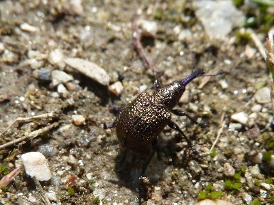
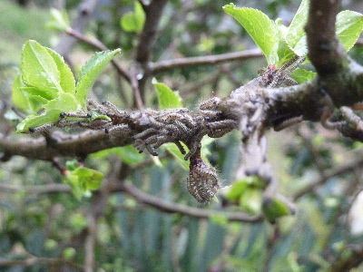
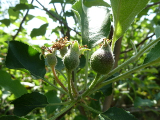
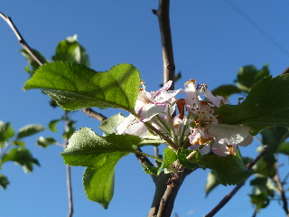
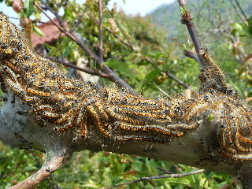
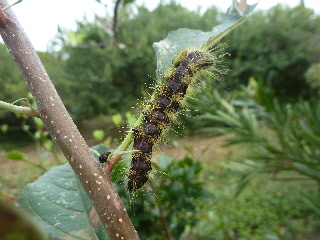
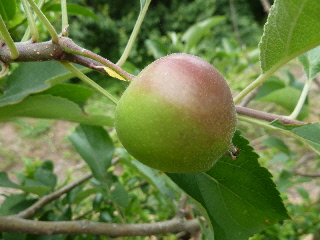

遊びで植物を育てよう
2017/04/16
リンゴにゾウムシがいました。
もうゾウムシが動いてるんですね。

光が当たってギラギラしてました。
綺麗なんですけど、きっと害があるんだろうな。
【リンゴTOP】 【果物TOP】 【園芸TOP】
2016/04/03
毛虫の時期がやって来た。
嫌なやつがやって来た。

薬をまかなきゃ。
他の木もこれからドンドン出てくるんだろうなー。
【リンゴTOP】 【果物TOP】 【園芸TOP】
2015/05/10
リンゴの小さい実が出来てます。
実が出来てると嬉しいですね。

これがこのまま大きくなるといいんですけど、そうはきっといかないんだな。
落ちちゃうんだな。
【リンゴTOP】 【果物TOP】 【園芸TOP】
2015/04/18
林檎の受粉をしました。
虫が飛んでるので、しなくてもいいかな？と思いながらも、受粉しました。

隣りの木の花を取って、花と花をくっつけるだけの簡単な作業です。
まだ木が小さいので、すぐに作業は終了しました。
【リンゴTOP】 【果物TOP】 【園芸TOP】
2014/10/09
林檎が狂い咲きです。
綺麗なんですけど、今咲くのはもったいないかな。

出来れば春に咲いて実をつけて欲しかったな。
【リンゴTOP】 【果物TOP】 【園芸TOP】
2014/04/26
林檎が毛虫だらけです。
気持ち悪い。

うじゃうじゃ毛虫がいました。
早く退治しなきゃ。
【リンゴTOP】 【果物TOP】 【園芸TOP】
2013/09/14
林檎が食べられてる。
毛虫がいっぱいだ！

怖そうな虫ですね。
これはきっと触ってはいけない。
【リンゴTOP】 【果物TOP】 【園芸TOP】
2013/06/09
リンゴの実だ。
リンゴが出来てた。

しかも、だいぶ大きい。色まで付いてる。
でもこれ一個だけです。
収穫まで落ちないで欲しいな。
【リンゴTOP】 【果物TOP】 【園芸TOP】
2013/04/20
リンゴの花が咲きました。
花が咲きました。


上と下ではリンゴの種類が違いますが、見た目は同じですね。
筆で受粉がちゃんと出来たかな？
【リンゴTOP】 【果物TOP】 【園芸TOP】
2013/04/13
リンゴの蕾は可愛い。
りんごに小さい蕾が出来ていました。

小さくて赤い蕾が並んでいるのが可愛いです。
見てて、なんか和みました。
【リンゴTOP】
【果物TOP】
【園芸TOP】
リンゴを沢山食べたいですが、ちょっとしか収穫できません。
【おいしいものを食べよう。】【たくさん寝よう。】
【ソロ活をしよう!】【季節感のあることをしよう。】【動画視聴はほどほどに。】【当サイトの全てのコンテンツは無断転載禁止です。】